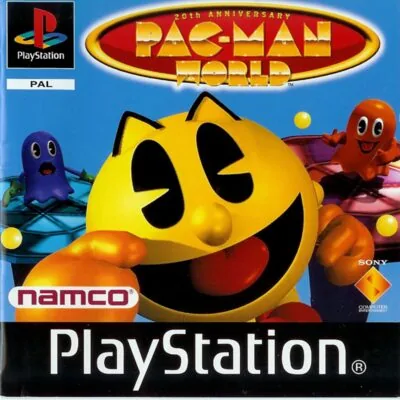
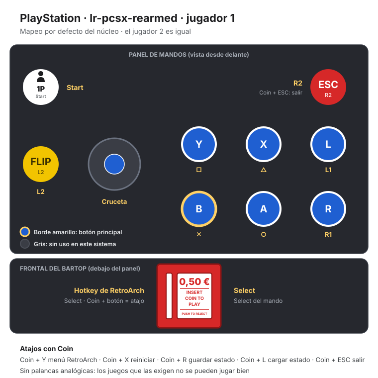
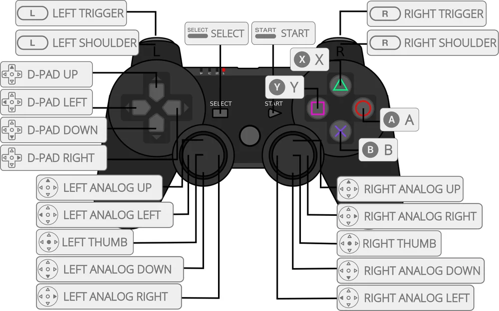

PlayStation
Pac-Man World
- Año: 2000
- Desarrollador: Namco
- Género: Plataformas
- Jugadores: 1 jugador
Veinte años después de su primera aventura, Pac-Man vuelve a casa y la encuentra vacía: Toc-Man y sus fantasmas han secuestrado a su familia y amigos. Pac-Man debe ir a la guarida de Toc-Man en la isla de los fantasmas para rescatarlos. En el modo aventura, de plataformas en 3D, hay que recoger puntos, frutas y llaves, saltar sobre los fantasmas y resolver puzles. Incluye también el Pac-Man clásico original y un modo laberinto en 3D.
Controles
si el botón 1P (Start) pausa el juego.
Mando de PlayStation (digital).
| Panel | Juego |
|---|---|
 | ✕ · Saltar |
 | ○ · Lanzar bolas |
 | R1 |
 | □ · Hacer la carrera rápida |
 | △ |
 | L1 |
 | R2 |
 | L2 |
 | Start |
 | Select |
| + | Salir del juego |
El panel en PlayStation




Argumento
Recopilado de internet (2026-11-02).
Es un día soleado en Pac-Land y Pac-Man vuelve a casa para celebrar sus veinte años como icono de los videojuegos. Pero al llegar se encuentra una sorpresa nada agradable: justo antes de la fiesta, Toc-Man, un impostor mecánico que dice ser el verdadero Pac-Man, ha secuestrado a toda su familia y a sus amigos.
Pac-Man tiene que ir a la peligrosa Isla de los Fantasmas para rescatarlos. Allí le esperan los fantasmas de siempre, Inky, Blinky, Pinky y Clyde, y también esqueletos, arañas y peces asesinos.
Final: tras liberar a todos sus familiares en cada mundo, se abre la puerta de Toc-Man y Pac-Man se enfrenta a él en la mansión.
Fuentes
Jugabilidad
Recopilado de internet (2026-11-02). Lo marcado con ⚠️ no está probado en la bartop.
- Versión de la bartop: EE. UU. (SLUS-00439), en inglés.
- Historia: en su 20 cumpleaños, Pac-Man llega a casa y descubre que Toc-Man ha secuestrado a su familia y amigos. Hay que rescatarlos en la isla de los fantasmas.
- Estructura: 6 mundos de 4 niveles (Ruins tiene 3), cada uno acabado en un jefe. Al principio hay 3 abiertos; los otros se abren al terminar los anteriores (detalle en «Guía de niveles»).
- Vida: aguanta 3 golpes. Hay trozos de vida y vidas extra por los niveles.
- Ataques: lanzar bolas (Pac-Dots), el culetazo (dos saltos seguidos: rompe cajas, aplasta enemigos y salta más) y la carrera rápida (sube rampas y activa plataformas).
- Fantasmas: solo se pueden comer tras tragarse una Power Pellet.
- Familia: en algunos niveles hay que encontrar una llave para liberar a un familiar. Hasta rescatarlos a todos no se abre la puerta de Toc-Man.
Botones según las guías (⚠️ por confirmar)
| Mando de PS1 | Panel | Acción |
|---|---|---|
| ✕ ×2 | B ×2 | Hacer el culetazo |
| ✕ mantenido (en el agua) | B mantenido | Saltar como un delfín |
| ○ mantenido | A mantenido | Lanzar una bola grande |
| △ | X | Bucear hacia abajo |
| L2 | Flipper | Ver el estado de la partida |
| R2 | ESC | Acercar la cámara (en los laberintos) |
Fuentes
Guía de niveles
Recopilado de internet (2026-11-02).
| Mundo | Niveles |
|---|---|
| Pirate | Buccaneer BeachCorsair's CoveCrazy CannonadeHMS Windbag |
| Ruins | Crisis CavernManic MinesAnubis Rex |
| Space | Space RaceFar OutGimme SpaceKing Galaxian |
| Funhouse | Clowning AroundBarrel BlastSpin DizzyClown Prix |
| Factory | Perilous PipesUnder PressureDown the TubesKrome Keeper |
| Mansion | Ghostly GardenCreepy CatacombsGrave DangerToc-Man |
Laberintos 3D (uno por cada Galaxian encontrado): Pirate · Cavern · Space · Funhouse · Factory · Mansion.
Fuentes
Objetos
Recopilado de internet (2026-11-02). Lo marcado con ⚠️ no está probado en la bartop.
| Objeto | Qué hace |
|---|---|
| Power Pellet | Permite comerse a los fantasmas un rato. |
| Fruta | Da puntos; algunas puertas secretas se abren con una fruta. |
| Letras P-A-C-M-A-N | Con las seis en un mismo nivel se abre una fase bonus. |
| Galaxian | Lleva a un laberinto 3D, como el Pac-Man clásico. |
| Llave | Libera a un familiar de Pac-Man. |
| Traje de metal | Permite andar bajo el agua. |
| Trozos de vida y vidas extra | Recuperan vida o dan una vida. |
Fuentes
Trucos y secretos
Recopilado de internet (2026-11-02). Lo marcado con ⚠️ no está probado en la bartop.
Secretos
- Laberintos 3D: hay 36. Al completar uno queda disponible en el menú principal. Completarlos todos en modo maratón abre la Pac-Gallery (dibujos del desarrollo).
- Modo Classic: el Pac-Man original de 1980, desde el menú principal.
- Tomas falsas: se ven al acabar el juego.
Truco: más continuaciones en Classic (⚠️ sin probar)
En el modo Classic, antes de pulsar Start, pulsa Select (Coin) varias veces: cada pulsación suma una continuación.
Pulsa Coin solo, sin mantenerlo ni juntarlo con otro botón: es la tecla de atajos.
- Existen códigos de GameShark (vidas y vida infinitas), pero no los copio aquí.
Longplay

Partida completa de la versión PlayStation (235 min), de LongplayArchive: Longplay of Pac-Man World.
Pulsa el minuto de un nivel para ver el vídeo desde ese punto.
Niveles
| Mundo | Niveles |
|---|---|
| Pirate | |
| Ruins | |
| Space | |
| Funhouse | |
| Factory | |
| Mansion | |
| Otros momentos |